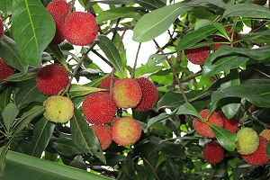
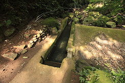
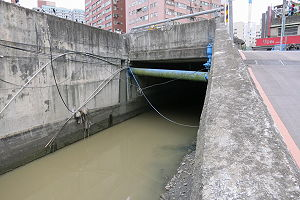

|
「樹梅」你可能常聽過、吃過酸酸甜甜的，但是樹梅坑溪在哪裡
？大多數人出現的影像，就是長滿樹梅的溪流，其實樹梅坑溪與樹梅沒有關係，早期樹梅坑溪是沒有名子，當地人叫「大坑溝」，因為水深、溪流也深。後來河水漸漸的污染，當地的文史工作者吳春和老師，在研究地方的文史，樹梅坑溪以前是一條乾淨有魚、蝦，提供飲水、灌溉的美麗溪流，溪水被污染了，當地的民眾
不重視樹梅坑溪的環境污染，吳春和老師，為了讓當地的民眾認識、愛護這溪流取名為「樹梅坑溪」。
「樹梅坑溪」位台灣省新北市淡水區竹圍里、竹圍捷運站的後方，沒仔細看還以為那是一條大水溝，樹梅坑溪是淡水河在淡水地區的13條支溪之一，在早期樹梅坑溪是竹圍地區主要的灌溉溪流，沒有樹梅坑溪的溪水滋養，就沒有竹圍地區農作物的豐收，以前樹梅坑溪是竹圍地區最重要的溪流。
樹梅坑溪在哪裡？一般的地圖上找不到，要用GOOGLE，地理位置在台灣新北市淡水區民生里，民權路25號旁的水泥溝渠，看起來就像大的排水溝，經緯度座標（25°
8' 17.57" 121° 27'
36.67"），源流區在貴子坑溪中游利用渠道引水至水源頭坪頂圳 ，經緯度座標（25°
9' 35.88 121°
29' 42.51"）高度
322公尺。 |
|
 |
|
酸酸甜甜的樹梅 |
|
 |
|
源流區在貴子坑溪中游 |
|
 |
|
民權路竹圍橋下的樹梅坑溪 |
|